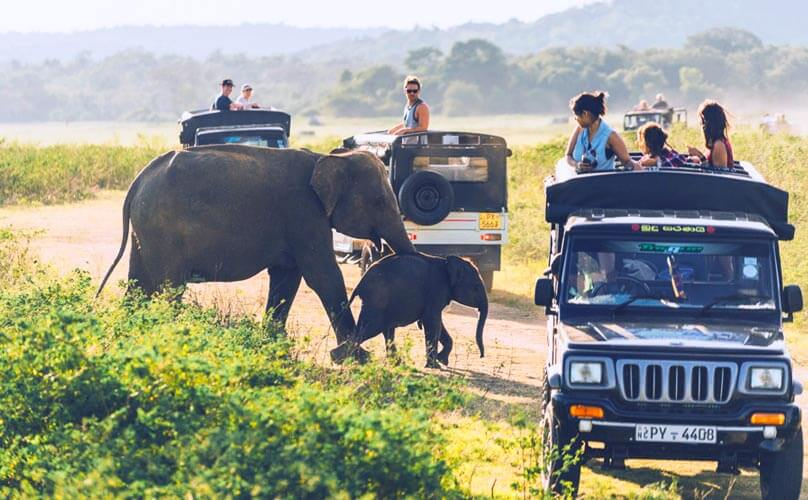

from easy walks to more intense treks. The country also has more than 400 waterfalls, a visit to which is included in plenty of hikes. Got your walking boots laced, camera packed and
sunscreen on? Here are the best hiking and trekking trails in Sri Lanka.
Loaction - Ratnapura, Pidurangala, Knuckles Range and Sigiriya
Pricing - $25 Upwards
Duration - 9am to 5pm(Depends On The Place)
Extras - Food, Drinks And Snacks Will Be Awailable
Water Rafting
White water rafting where you can ride the tides of Kelani River. Other than that it's popular for sports like confidence jump, Stream Sliding, Waterfall abseiling, Jungle trekking. Bird watching
and cave exploration and last but not least river trips and expeditions.
experience by creating wildlife tours guided by knowledgeable local wildlife guides. To make the experience even more unique, we use wildlife lodges with a character such as tented safari
camps, tree houses in the wild, off the beaten rustic wildlife safari lodges and small authentic wildlife hotels.
Loaction - Kitulgala
Pricing - $30 Upwards
Duration - 10am to 6pm
Extras - Age 15 And Above, Compulsory To Read Rules And Regulations
Before Entering.
